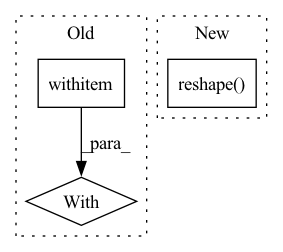

Pattern ID :24553
Before Change
def accuracy(output, target, topk=1):
Computes the accuracy over the k top predictions for the specified values of k
with flow .no_grad():
// TODO: support tuple topk=(1, 5, 10)
// maxk = max(topk)
batch_size = target.size(0)
_, pred = output.topk(topk, 1, True, True)
pred = pred.transpose(0, 1)After Change
pred = pred.t()
correct = pred.eq(target.reshape(1, -1).expand_as(pred))
return [
(correct[: min(k, maxk)].reshape( -1) .float().sum(0) * 100.0 / batch_size).item()
for k in topk
]
In pattern: SUPERPATTERN
Frequency: 3
Non-data size: 3
Instances Fragment ID: 76267211
Project Name: oneflow-inc/libai
Commit Name: 371360b9b903675607d2f92544962eb8b2330a17
Time: 2022-02-13
Author: 48727989+rentainhe@users.noreply.github.com
File Name: libai/evaluation/cls_evaluator.py
M Class Name: AnonimousClass
N Class Name: AnonimousClass
M Method Name: accuracy(3)
N Method Name: accuracy(3)
M Parent Class:
N Parent Class:
M File Name: libai/evaluation/cls_evaluator.py
N File Name: libai/evaluation/cls_evaluator.py
M Start Line: 31
M End Line: 49
N Start Line: 28
N End Line: 36
Before Change
def load_data():
import pickle
with open ("/Users/mfe/Downloads/dataset.pkl","rb") as f:
data = pickle.load(f)
xs, us = data
us = np.expand_dims(us, axis=-1)After Change
print(us.shape)
// For plotting
xs = np.reshape( xs, (-1,11,6))
us = np.reshape(us, (-1,11,3))
import matplotlib.pyplot as plt
for i in range(100): Fragment ID: 76267210
Project Name: mit-acl/nn_robustness_analysis
Commit Name: 3f301ce67be70902840d23f40aecc98b346c412b
Time: 2021-02-16
Author: mfe@mit.edu
File Name: nn_closed_loop/nn_closed_loop/utils/nn.py
M Class Name: AnonimousClass
N Class Name: AnonimousClass
M Method Name: load_data(0)
N Method Name: load_data(0)
M Parent Class:
N Parent Class:
M File Name: nn_closed_loop/nn_closed_loop/utils/nn.py
N File Name: nn_closed_loop/nn_closed_loop/utils/nn.py
M Start Line: 48
M End Line: 52
N Start Line: 57
N End Line: 70
Before Change
correct_pred = tf.equal(tf.argmax(logits, 1), tf.argmax(y, 1))
accuracy = tf.reduce_mean(tf.cast(correct_pred, tf.float32), name="accuracy")
with tf .Session() as sess:
// Initializing the variables
sess.run(tf.global_variables_initializer())
// Training cycle
for epoch in range(epochs):After Change
def fit(self, X_train, Y_train, sess, epochs, dropout=0.75, batch_size=128, learning_rate=0.001):
weights, biases = self.init_para(self.num_classes)
X_train = X_train.reshape( (X_train.shape[0], self.input_size))
// Construct model
logits = self.conv_net(self.X, weights, biases, self.keep_prob)
prediction = tf.nn.softmax(logits)
pred = tf.argmax(prediction, 1) Fragment ID: 76267212
Project Name: skylark0924/machine-learning-is-all-you-need
Commit Name: f91f2780d4fd91d4d9e8bee96bed181857bb450f
Time: 2020-04-23
Author: l.syj@163.com
File Name: 10CNN/CNN_models.py
M Class Name: TF_CNN
N Class Name: TF_CNN
M Method Name: fit(8)
N Method Name: fit(6)
M Parent Class:
N Parent Class:
M File Name: 10CNN/CNN_models.py
N File Name: 10CNN/CNN_models.py
M Start Line: 269
M End Line: 301
N Start Line: 272
N End Line: 293